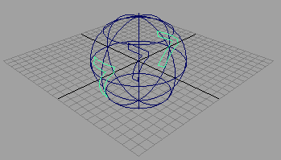
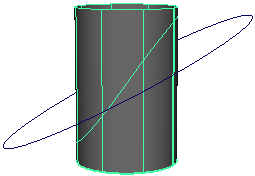

Maya 提供多种方法创建曲面上的曲线：
通过放置编辑点绘制曲面上的曲线
- 选择要在上面绘制曲面上的曲线的曲面。
- 在状态行中，单击“激活选定对象”(Make the selected object live)图标。
- 选择创建 > CV 曲线工具(Create > CV Curve Tool)或创建 > EP 曲线工具(Create > EP Curve Tool)。
- 在活动曲面上绘制曲线。
- 当曲线完成后，再次单击“激活选定对象”(Make selected object live)图标。
将曲线沿视图方向投影到曲面上。
- 选择一个曲面，然后选择一个或多个曲线。
在指向您希望投影的方向的视图中选择对象。例如，如果希望沿 Y 轴投影，请在“顶”(Top)视图中选择对象。
- 选择 >
 ，然后将“沿以下项投影”(Project Along)设置为“活动视图”(Active View)。
，然后将“沿以下项投影”(Project Along)设置为“活动视图”(Active View)。 - 单击“投影”(Project)。 
将曲线沿曲面法线投影到曲面上
- 选择一个曲面，然后选择一个或多个曲线。
- 选择 > ，然后将“沿以下项投影”(Project Along)设置为“活动视图”(Active View)。
- 单击“投影”(Project)。 
使两个曲面相交以创建曲面上的曲线
- 选择两个曲面。
- 选择“曲面 > 相交”(Surfaces > Intersect)。
默认设置为在两个曲面上创建曲面上的曲线。若要只在第一个或第二个曲面上创建曲面上的曲线，请打开选项框（“曲面 > 曲面相交”(Surfaces > Intersect Surfaces) >
），然后设置“为以下项创建曲线”(Create Curves For)选项。
注释
- 如果是在启用构建历史的情况下，使用投影曲线或曲面相交创建了曲面上的曲线，那么若是在删除构建历史之前删除这些曲线上的组件，则可能会导致在保存到文件时出现数据丢失。因此，请先删除构建历史，然后再删除组件。